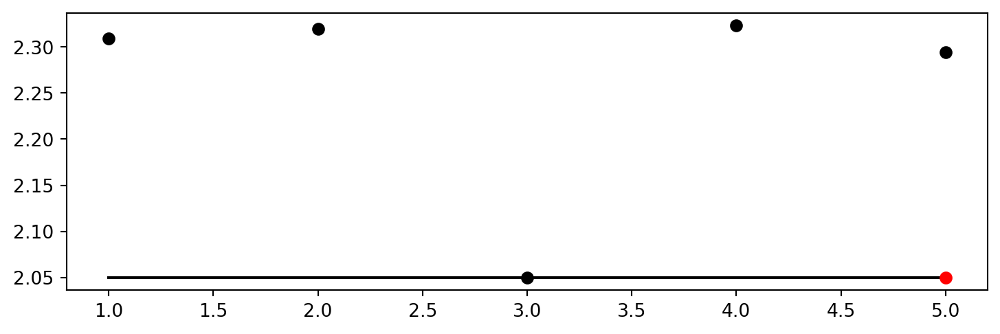
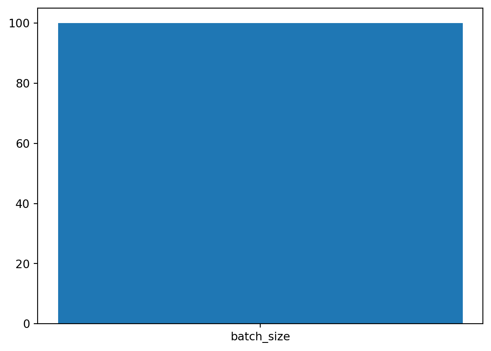
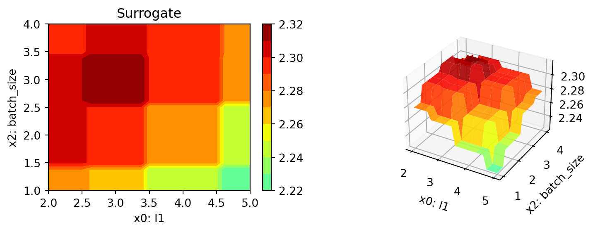
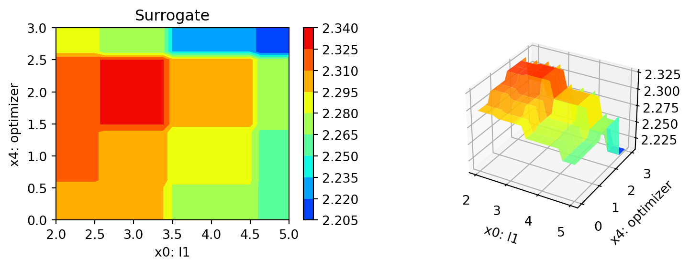
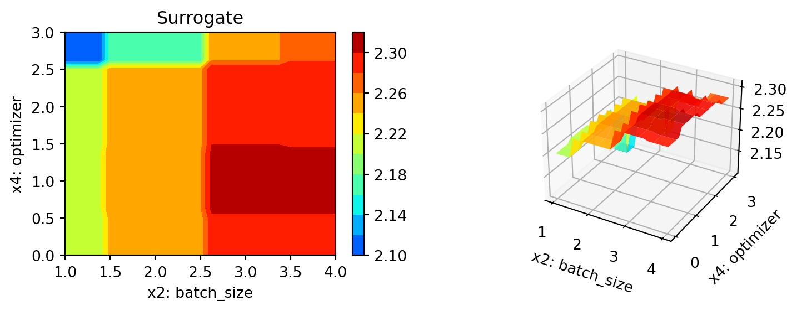

pip list | grep "spot[RiverPython]"spotPython 0.2.51
spotRiver 0.0.94Note: you may need to restart the kernel to use updated packages.In this tutorial, we will show how spotPython can be integrated into the PyTorch training workflow.
This document refers to the following software versions:
python: 3.10.10torch: 2.0.1torchvision: 0.15.0pip list | grep "spot[RiverPython]"spotPython 0.2.51
spotRiver 0.0.94Note: you may need to restart the kernel to use updated packages.spotPython can be installed via pip. Alternatively, the source code can be downloaded from gitHub: https://github.com/sequential-parameter-optimization/spotPython.
!pip install spotPythonspotPython from gitHub.# import sys
# !{sys.executable} -m pip install --upgrade build
# !{sys.executable} -m pip install --upgrade --force-reinstall spotPythonBefore we consider the detailed experimental setup, we select the parameters that affect run time, initial design size and the device that is used.
DEVICE."cpu" is preferred (on Mac)."cuda:0" instead.None, spotPython will automatically select the device.
"mps" on Macs, which is not the best choice for simple neural nets.MAX_TIME = 1
INIT_SIZE = 5
DEVICE = "cpu" # "cuda:0" Nonefrom spotPython.utils.device import getDevice
DEVICE = getDevice(DEVICE)
print(DEVICE)cpuimport os
import copy
import socket
from datetime import datetime
from dateutil.tz import tzlocal
start_time = datetime.now(tzlocal())
HOSTNAME = socket.gethostname().split(".")[0]
experiment_name = '12-torch' + "_" + HOSTNAME + "_" + str(MAX_TIME) + "min_" + str(INIT_SIZE) + "init_" + str(start_time).split(".", 1)[0].replace(' ', '_')
experiment_name = experiment_name.replace(':', '-')
print(experiment_name)
if not os.path.exists('./figures'):
os.makedirs('./figures')12-torch_maans05_1min_5init_2023-06-28_15-02-34fun_control DictionaryspotPython uses a Python dictionary for storing the information required for the hyperparameter tuning process, which was described in Section 14.2.
tensorboard_path to None if you are working under Windows.from spotPython.utils.init import fun_control_init
fun_control = fun_control_init(task="classification",
tensorboard_path="runs/12_spot_hpt_torch_cifar10",
device=DEVICE)from torchvision import datasets, transforms
import torchvision
def load_data(data_dir="./data"):
transform = transforms.Compose([
transforms.ToTensor(),
transforms.Normalize((0.5, 0.5, 0.5), (0.5, 0.5, 0.5))
])
trainset = torchvision.datasets.CIFAR10(
root=data_dir, train=True, download=True, transform=transform)
testset = torchvision.datasets.CIFAR10(
root=data_dir, train=False, download=True, transform=transform)
return trainset, testset
train, test = load_data()Files already downloaded and verifiedFiles already downloaded and verifiedfun_control dictionary:n_samples = len(train)
# add the dataset to the fun_control
fun_control.update({"data": None, # dataset,
"train": train,
"test": test,
"n_samples": n_samples,
"target_column": None})After the training and test data are specified and added to the fun_control dictionary, spotPython allows the specification of a data preprocessing pipeline, e.g., for the scaling of the data or for the one-hot encoding of categorical variables, see Section 14.4. This feature is not used here, so we do not change the default value (which is None).
algorithm) and core_model_hyper_dictspotPython includes the Net_CIFAR10 class which is implemented in the file netcifar10.py. The class is imported here.
This class inherits from the class Net_Core which is implemented in the file netcore.py, see Section 14.5.1.
from spotPython.torch.netcifar10 import Net_CIFAR10
from spotPython.data.torch_hyper_dict import TorchHyperDict
from spotPython.hyperparameters.values import add_core_model_to_fun_control
fun_control = add_core_model_to_fun_control(core_model=Net_CIFAR10,
fun_control=fun_control,
hyper_dict=TorchHyperDict,
filename=None)hyper_dict Hyperparameters for the Selected AlgorithmspotPython uses JSON files for the specification of the hyperparameters, which were described in Section 14.5.5.
The corresponding entries for the core_model class are shown below.
fun_control['core_model_hyper_dict']{'l1': {'type': 'int',
'default': 5,
'transform': 'transform_power_2_int',
'lower': 2,
'upper': 9},
'l2': {'type': 'int',
'default': 5,
'transform': 'transform_power_2_int',
'lower': 2,
'upper': 9},
'lr_mult': {'type': 'float',
'default': 1.0,
'transform': 'None',
'lower': 0.1,
'upper': 10.0},
'batch_size': {'type': 'int',
'default': 4,
'transform': 'transform_power_2_int',
'lower': 1,
'upper': 4},
'epochs': {'type': 'int',
'default': 3,
'transform': 'transform_power_2_int',
'lower': 3,
'upper': 4},
'k_folds': {'type': 'int',
'default': 1,
'transform': 'None',
'lower': 1,
'upper': 1},
'patience': {'type': 'int',
'default': 5,
'transform': 'None',
'lower': 2,
'upper': 10},
'optimizer': {'levels': ['Adadelta',
'Adagrad',
'Adam',
'AdamW',
'SparseAdam',
'Adamax',
'ASGD',
'NAdam',
'RAdam',
'RMSprop',
'Rprop',
'SGD'],
'type': 'factor',
'default': 'SGD',
'transform': 'None',
'class_name': 'torch.optim',
'core_model_parameter_type': 'str',
'lower': 0,
'upper': 12},
'sgd_momentum': {'type': 'float',
'default': 0.0,
'transform': 'None',
'lower': 0.0,
'upper': 1.0}}hyper_dict Hyperparameters for the Selected Algorithm aka core_modelspotPython provides functions for modifying the hyperparameters, their bounds and factors as well as for activating and de-activating hyperparameters without re-compilation of the Python source code. These functions were described in Section 14.6.
hyper_dict Hyperparameters for the Selected Algorithm aka core_modelThe hyperparameter k_folds is not used, it is de-activated here by setting the lower and upper bound to the same value.
l1 and l2 as well as epochs and patience are set to small values for demonstration purposes. These values are too small for a real application.fun_control = modify_hyper_parameter_bounds(fun_control, "l1", bounds=[2, 7])fun_control = modify_hyper_parameter_bounds(fun_control, "epochs", bounds=[7, 9]) andfun_control = modify_hyper_parameter_bounds(fun_control, "patience", bounds=[2, 7])from spotPython.hyperparameters.values import modify_hyper_parameter_bounds
fun_control = modify_hyper_parameter_bounds(fun_control, "k_folds", bounds=[0, 0])
fun_control = modify_hyper_parameter_bounds(fun_control, "patience", bounds=[2, 2])
fun_control = modify_hyper_parameter_bounds(fun_control, "epochs", bounds=[2, 3])
fun_control = modify_hyper_parameter_bounds(fun_control, "l1", bounds=[2, 5])
fun_control = modify_hyper_parameter_bounds(fun_control, "l2", bounds=[2, 5])from spotPython.hyperparameters.values import modify_hyper_parameter_levels
fun_control = modify_hyper_parameter_levels(fun_control, "optimizer",["Adam", "AdamW", "Adamax", "NAdam"])Optimizers can be selected as described in Section 19.6.2.
Optimizers are described in Section 14.6.1.
fun_control = modify_hyper_parameter_bounds(fun_control,
"lr_mult", bounds=[1e-3, 1e-3])
fun_control = modify_hyper_parameter_bounds(fun_control,
"sgd_momentum", bounds=[0.9, 0.9])The evaluation procedure requires the specification of two elements:
These are described in Section 19.7.1.
The key "loss_function" specifies the loss function which is used during the optimization, see Section 14.7.5.
We will use CrossEntropy loss for the multiclass-classification task.
from torch.nn import CrossEntropyLoss
loss_function = CrossEntropyLoss()
fun_control.update({
"loss_function": loss_function,
"shuffle": True,
"eval": "train_hold_out"
})import torchmetrics
metric_torch = torchmetrics.Accuracy(task="multiclass",
num_classes=10).to(fun_control["device"])
fun_control.update({"metric_torch": metric_torch})The following code passes the information about the parameter ranges and bounds to spot.
# extract the variable types, names, and bounds
from spotPython.hyperparameters.values import (get_bound_values,
get_var_name,
get_var_type,)
var_type = get_var_type(fun_control)
var_name = get_var_name(fun_control)
fun_control.update({"var_type": var_type,
"var_name": var_name})
lower = get_bound_values(fun_control, "lower")
upper = get_bound_values(fun_control, "upper")from spotPython.utils.eda import gen_design_table
print(gen_design_table(fun_control))| name | type | default | lower | upper | transform |
|--------------|--------|-----------|---------|---------|-----------------------|
| l1 | int | 5 | 2 | 5 | transform_power_2_int |
| l2 | int | 5 | 2 | 5 | transform_power_2_int |
| lr_mult | float | 1.0 | 0.001 | 0.001 | None |
| batch_size | int | 4 | 1 | 4 | transform_power_2_int |
| epochs | int | 3 | 2 | 3 | transform_power_2_int |
| k_folds | int | 1 | 0 | 0 | None |
| patience | int | 5 | 2 | 2 | None |
| optimizer | factor | SGD | 0 | 3 | None |
| sgd_momentum | float | 0.0 | 0.9 | 0.9 | None |fun_torchThe objective function fun_torch is selected next. It implements an interface from PyTorch’s training, validation, and testing methods to spotPython.
from spotPython.fun.hypertorch import HyperTorch
fun = HyperTorch().fun_torchimport numpy as np
from spotPython.spot import spot
from math import inf
spot_tuner = spot.Spot(fun=fun,
lower = lower,
upper = upper,
fun_evals = inf,
fun_repeats = 1,
max_time = MAX_TIME,
noise = False,
tolerance_x = np.sqrt(np.spacing(1)),
var_type = var_type,
var_name = var_name,
infill_criterion = "y",
n_points = 1,
seed=123,
log_level = 50,
show_models= False,
show_progress= True,
fun_control = fun_control,
design_control={"init_size": INIT_SIZE,
"repeats": 1},
surrogate_control={"noise": True,
"cod_type": "norm",
"min_theta": -4,
"max_theta": 3,
"n_theta": len(var_name),
"model_fun_evals": 10_000,
"log_level": 50
})
spot_tuner.run(X_start=X_start)
config: {'l1': 16, 'l2': 8, 'lr_mult': 0.001, 'batch_size': 16, 'epochs': 8, 'k_folds': 0, 'patience': 2, 'optimizer': 'AdamW', 'sgd_momentum': 0.9}
Epoch: 1 | MulticlassAccuracy: 0.0989999994635582 | Loss: 2.3273041887283323 | Acc: 0.0990000000000000.
Epoch: 2 | MulticlassAccuracy: 0.0989999994635582 | Loss: 2.3255877819061279 | Acc: 0.0990000000000000.
Epoch: 3 | MulticlassAccuracy: 0.0989999994635582 | Loss: 2.3236485553741457 | Acc: 0.0990000000000000.
Epoch: 4 | MulticlassAccuracy: 0.0992000028491020 | Loss: 2.3213163890838624 | Acc: 0.0992000000000000.
Epoch: 5 | MulticlassAccuracy: 0.1036999970674515 | Loss: 2.3184822729110719 | Acc: 0.1037000000000000.
Epoch: 6 | MulticlassAccuracy: 0.1204999983310699 | Loss: 2.3151936765670778 | Acc: 0.1205000000000000.
Epoch: 7 | MulticlassAccuracy: 0.1323000043630600 | Loss: 2.3116959653854372 | Acc: 0.1323000000000000.
Epoch: 8 | MulticlassAccuracy: 0.1378999948501587 | Loss: 2.3079920045852660 | Acc: 0.1379000000000000.
Returned to Spot: Validation loss: 2.307992004585266
config: {'l1': 8, 'l2': 8, 'lr_mult': 0.001, 'batch_size': 8, 'epochs': 4, 'k_folds': 0, 'patience': 2, 'optimizer': 'Adamax', 'sgd_momentum': 0.9}
Epoch: 1 | MulticlassAccuracy: 0.1011999994516373 | Loss: 2.3317700251579283 | Acc: 0.1012000000000000.
Epoch: 2 | MulticlassAccuracy: 0.1006499975919724 | Loss: 2.3309015810012816 | Acc: 0.1006500000000000.
Epoch: 3 | MulticlassAccuracy: 0.0983500033617020 | Loss: 2.3297225072860717 | Acc: 0.0983500000000000.
Epoch: 4 | MulticlassAccuracy: 0.1010499969124794 | Loss: 2.3282005418777465 | Acc: 0.1010500000000000.
Returned to Spot: Validation loss: 2.3282005418777465
config: {'l1': 32, 'l2': 16, 'lr_mult': 0.001, 'batch_size': 2, 'epochs': 8, 'k_folds': 0, 'patience': 2, 'optimizer': 'NAdam', 'sgd_momentum': 0.9}
Epoch: 1 | MulticlassAccuracy: 0.1421499997377396 | Loss: 2.3043623634338379 | Acc: 0.1421500000000000.
Epoch: 2 | MulticlassAccuracy: 0.1605000048875809 | Loss: 2.2900383990287780 | Acc: 0.1605000000000000.
Epoch: 3 | MulticlassAccuracy: 0.1620000004768372 | Loss: 2.2619133894801138 | Acc: 0.1620000000000000.
Epoch: 4 | MulticlassAccuracy: 0.1654500067234039 | Loss: 2.2277467759370806 | Acc: 0.1654500000000000.
Epoch: 5 | MulticlassAccuracy: 0.1722500026226044 | Loss: 2.1960759233176708 | Acc: 0.1722500000000000.
Epoch: 6 | MulticlassAccuracy: 0.1792500019073486 | Loss: 2.1673096809625627 | Acc: 0.1792500000000000.
Epoch: 7 | MulticlassAccuracy: 0.1886499971151352 | Loss: 2.1414689415037631 | Acc: 0.1886500000000000.
Epoch: 8 | MulticlassAccuracy: 0.1953999996185303 | Loss: 2.1175767042219640 | Acc: 0.1954000000000000.
Returned to Spot: Validation loss: 2.117576704221964
config: {'l1': 4, 'l2': 8, 'lr_mult': 0.001, 'batch_size': 4, 'epochs': 4, 'k_folds': 0, 'patience': 2, 'optimizer': 'AdamW', 'sgd_momentum': 0.9}
Epoch: 1 | MulticlassAccuracy: 0.1004500016570091 | Loss: 2.3360843134403231 | Acc: 0.1004500000000000.
Epoch: 2 | MulticlassAccuracy: 0.1004500016570091 | Loss: 2.3331139734745028 | Acc: 0.1004500000000000.
Epoch: 3 | MulticlassAccuracy: 0.1004500016570091 | Loss: 2.3300453662395477 | Acc: 0.1004500000000000.
Epoch: 4 | MulticlassAccuracy: 0.1026000007987022 | Loss: 2.3262354440689088 | Acc: 0.1026000000000000.
Returned to Spot: Validation loss: 2.326235444068909
config: {'l1': 16, 'l2': 32, 'lr_mult': 0.001, 'batch_size': 8, 'epochs': 8, 'k_folds': 0, 'patience': 2, 'optimizer': 'Adam', 'sgd_momentum': 0.9}
Epoch: 1 | MulticlassAccuracy: 0.0964000001549721 | Loss: 2.3066452282905581 | Acc: 0.0964000000000000.
Epoch: 2 | MulticlassAccuracy: 0.0963499993085861 | Loss: 2.3060452141761778 | Acc: 0.0963500000000000.
Epoch: 3 | MulticlassAccuracy: 0.1006999984383583 | Loss: 2.3053397758483887 | Acc: 0.1007000000000000.
Epoch: 4 | MulticlassAccuracy: 0.1167500019073486 | Loss: 2.3044564161300660 | Acc: 0.1167500000000000.
Epoch: 5 | MulticlassAccuracy: 0.1306499987840652 | Loss: 2.3032602243423463 | Acc: 0.1306500000000000.
Epoch: 6 | MulticlassAccuracy: 0.1377000063657761 | Loss: 2.3015392008781435 | Acc: 0.1377000000000000.
Epoch: 7 | MulticlassAccuracy: 0.1400499939918518 | Loss: 2.2991531019210814 | Acc: 0.1400500000000000.
Epoch: 8 | MulticlassAccuracy: 0.1420000046491623 | Loss: 2.2960319381713865 | Acc: 0.1420000000000000.
Returned to Spot: Validation loss: 2.2960319381713865
config: {'l1': 8, 'l2': 16, 'lr_mult': 0.001, 'batch_size': 8, 'epochs': 8, 'k_folds': 0, 'patience': 2, 'optimizer': 'NAdam', 'sgd_momentum': 0.9}
Epoch: 1 | MulticlassAccuracy: 0.1009500026702881 | Loss: 2.3048381950378416 | Acc: 0.1009500000000000.
Epoch: 2 | MulticlassAccuracy: 0.1009000018239021 | Loss: 2.2995462740898134 | Acc: 0.1009000000000000.
Epoch: 3 | MulticlassAccuracy: 0.1102000027894974 | Loss: 2.2940952171325684 | Acc: 0.1102000000000000.
Epoch: 4 | MulticlassAccuracy: 0.1238000020384789 | Loss: 2.2880327554702760 | Acc: 0.1238000000000000.
Epoch: 5 | MulticlassAccuracy: 0.1295499950647354 | Loss: 2.2808022173881533 | Acc: 0.1295500000000000.
Epoch: 6 | MulticlassAccuracy: 0.1445000022649765 | Loss: 2.2737141982078550 | Acc: 0.1445000000000000.
Epoch: 7 | MulticlassAccuracy: 0.1583500057458878 | Loss: 2.2665950170516966 | Acc: 0.1583500000000000.
Epoch: 8 | MulticlassAccuracy: 0.1606999933719635 | Loss: 2.2595083893775940 | Acc: 0.1607000000000000.
Returned to Spot: Validation loss: 2.259508389377594
spotPython tuning: 2.117576704221964 [##########] 100.00% Done...
<spotPython.spot.spot.Spot at 0x1401fa8f0>The textual output shown in the console (or code cell) can be visualized with Tensorboard as described in Section 14.9, see also the description in the documentation: Tensorboard.
After the hyperparameter tuning run is finished, the results can be analyzed as described in Section 14.10.
SAVE = False
LOAD = False
if SAVE:
result_file_name = "res_" + experiment_name + ".pkl"
with open(result_file_name, 'wb') as f:
pickle.dump(spot_tuner, f)
if LOAD:
result_file_name = "ADD THE NAME here, e.g.: res_ch10-friedman-hpt-0_maans03_60min_20init_1K_2023-04-14_10-11-19.pkl"
with open(result_file_name, 'rb') as f:
spot_tuner = pickle.load(f)After the hyperparameter tuning run is finished, the progress of the hyperparameter tuning can be visualized. The following code generates the progress plot from ?fig-progress.
spot_tuner.plot_progress(log_y=False,
filename="./figures/" + experiment_name+"_progress.png")
print(gen_design_table(fun_control=fun_control,
spot=spot_tuner))| name | type | default | lower | upper | tuned | transform | importance | stars |
|--------------|--------|-----------|---------|---------|---------|-----------------------|--------------|---------|
| l1 | int | 5 | 2.0 | 5.0 | 5.0 | transform_power_2_int | 0.00 | |
| l2 | int | 5 | 2.0 | 5.0 | 4.0 | transform_power_2_int | 100.00 | *** |
| lr_mult | float | 1.0 | 0.001 | 0.001 | 0.001 | None | 0.00 | |
| batch_size | int | 4 | 1.0 | 4.0 | 1.0 | transform_power_2_int | 0.95 | . |
| epochs | int | 3 | 2.0 | 3.0 | 3.0 | transform_power_2_int | 0.00 | |
| k_folds | int | 1 | 0.0 | 0.0 | 0.0 | None | 0.00 | |
| patience | int | 5 | 2.0 | 2.0 | 2.0 | None | 0.00 | |
| optimizer | factor | SGD | 0.0 | 3.0 | 3.0 | None | 1.46 | * |
| sgd_momentum | float | 0.0 | 0.9 | 0.9 | 0.9 | None | 0.00 | |spot_tuner.plot_importance(threshold=0.025, filename="./figures/" + experiment_name+"_importance.png")
The architecture of the spotPython model can be obtained by the following code:
from spotPython.hyperparameters.values import get_one_core_model_from_X
X = spot_tuner.to_all_dim(spot_tuner.min_X.reshape(1,-1))
model_spot = get_one_core_model_from_X(X, fun_control)
model_spotNet_CIFAR10(
(conv1): Conv2d(3, 6, kernel_size=(5, 5), stride=(1, 1))
(pool): MaxPool2d(kernel_size=2, stride=2, padding=0, dilation=1, ceil_mode=False)
(conv2): Conv2d(6, 16, kernel_size=(5, 5), stride=(1, 1))
(fc1): Linear(in_features=400, out_features=32, bias=True)
(fc2): Linear(in_features=32, out_features=16, bias=True)
(fc3): Linear(in_features=16, out_features=10, bias=True)
)from spotPython.torch.traintest import (
train_tuned,
test_tuned,
)train_tuned(net=model_spot, train_dataset=train,
loss_function=fun_control["loss_function"],
metric=fun_control["metric_torch"],
shuffle=True,
device = fun_control["device"],
path=None,
task=fun_control["task"],)Epoch: 1 | Batch: 10000. Batch Size: 2. Training Loss (running): 2.312MulticlassAccuracy: 0.1020499989390373 | Loss: 2.3101801255941390 | Acc: 0.1020500000000000.
Epoch: 2 | Batch: 10000. Batch Size: 2. Training Loss (running): 2.306MulticlassAccuracy: 0.1452499926090240 | Loss: 2.2926663923740387 | Acc: 0.1452500000000000.
Epoch: 3 | Batch: 10000. Batch Size: 2. Training Loss (running): 2.280MulticlassAccuracy: 0.1097000017762184 | Loss: 2.2586850969433785 | Acc: 0.1097000000000000.
Epoch: 4 | Batch: 10000. Batch Size: 2. Training Loss (running): 2.247MulticlassAccuracy: 0.1108499988913536 | Loss: 2.2295932224273680 | Acc: 0.1108500000000000.
Epoch: 5 | Batch: 10000. Batch Size: 2. Training Loss (running): 2.222MulticlassAccuracy: 0.1309999972581863 | Loss: 2.2032880866408346 | Acc: 0.1310000000000000.
Epoch: 6 | Batch: 10000. Batch Size: 2. Training Loss (running): 2.195MulticlassAccuracy: 0.1525499969720840 | Loss: 2.1769190809011461 | Acc: 0.1525500000000000.
Epoch: 7 | Batch: 10000. Batch Size: 2. Training Loss (running): 2.172MulticlassAccuracy: 0.1633500009775162 | Loss: 2.1490574167847631 | Acc: 0.1633500000000000.
Epoch: 8 | Batch: 10000. Batch Size: 2. Training Loss (running): 2.145MulticlassAccuracy: 0.1781000047922134 | Loss: 2.1182854765415193 | Acc: 0.1781000000000000.
Returned to Spot: Validation loss: 2.1182854765415193If path is set to a filename, e.g., path = "model_spot_trained.pt", the weights of the trained model will be loaded from this file.
test_tuned(net=model_spot, test_dataset=test,
shuffle=False,
loss_function=fun_control["loss_function"],
metric=fun_control["metric_torch"],
device = fun_control["device"],
task=fun_control["task"],)MulticlassAccuracy: 0.1759999990463257 | Loss: 2.1147939982652666 | Acc: 0.1760000000000000.
Final evaluation: Validation loss: 2.1147939982652666
Final evaluation: Validation metric: 0.17599999904632568
----------------------------------------------(2.1147939982652666, nan, tensor(0.1760))k_folds attribute of the model as follows:setattr(model_spot, "k_folds", 10)from spotPython.torch.traintest import evaluate_cv
# modify k-kolds:
setattr(model_spot, "k_folds", 3)
df_eval, df_preds, df_metrics = evaluate_cv(net=model_spot,
dataset=fun_control["data"],
loss_function=fun_control["loss_function"],
metric=fun_control["metric_torch"],
task=fun_control["task"],
writer=fun_control["writer"],
writerId="model_spot_cv",
device = fun_control["device"])Error in Net_Core. Call to evaluate_cv() failed. err=TypeError("Expected sequence or array-like, got <class 'NoneType'>"), type(err)=<class 'TypeError'>metric_name = type(fun_control["metric_torch"]).__name__
print(f"loss: {df_eval}, Cross-validated {metric_name}: {df_metrics}")loss: nan, Cross-validated MulticlassAccuracy: nanfilename = "./figures/" + experiment_name
spot_tuner.plot_important_hyperparameter_contour(filename=filename)l2: 99.99999999999999
batch_size: 0.9498734984258648
optimizer: 1.4569327444515534


spot_tuner.parallel_plot()Parallel coordinates plots
PLOT_ALL = False
if PLOT_ALL:
n = spot_tuner.k
for i in range(n-1):
for j in range(i+1, n):
spot_tuner.plot_contour(i=i, j=j, min_z=min_z, max_z = max_z)